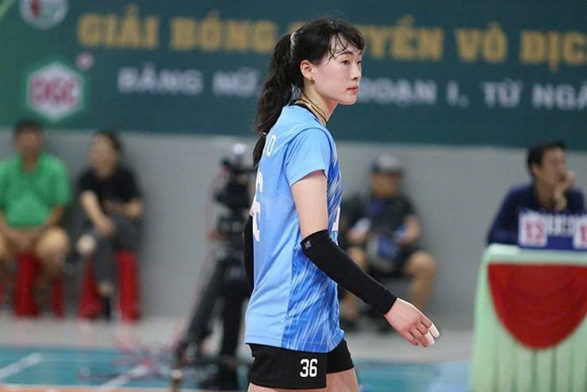

Cai Xiaoqing chính thức chia tay bóng chuyền Việt Nam
Hành trình thứ 2 của "Thần tiên tỷ tỷ" Cai Xiaoqing cùng XMLS Thanh Hóa đã đi đến hồi kết. Chủ công người Trung Quốc vừa chính thức nói lời chia tay bóng chuyền Việt Nam.

Cai Xiaoqing chính thức chia tay qua Instagram cá nhân
Chủ công người Trung Quốc Cai Xiaoqing vừa chính thức nói lời chia tay bóng chuyền Việt Nam thông qua bài đăng mới nhất trên Instagram cá nhân. Cô chia sẻ rằng quãng thời gian thi đấu tại Việt Nam là những kỷ niệm tuyệt vời, đáng nhớ và gửi lời tạm biệt đến tất cả mọi người.
Tin đồn về giải nghệ và lập gia đình
Trước đó xuất hiện một số tin đồn cho rằng Cai sẽ trở về Trung Quốc để giải nghệ và lập gia đình, tuy nhiên những thông tin này không chính xác. Thực tế, quyết định chia tay của cô là vì những lý do khác liên quan đến sự phát triển sự nghiệp của cô.
Lần thi đấu thứ hai cùng XMLS Thanh Hóa
Đây là lần thứ hai Cai Xiaoqing thi đấu tại Việt Nam, đều trong màu áo XMLS Thanh Hóa. Cách đây hai năm, cô từng thi đấu bùng nổ, góp phần giúp đội bóng xứ Thanh trở thành hiện tượng tại giải VĐQG.
Thất bại ở giai đoạn 1 giải VĐQG
Ở lần trở lại này, dù vẫn thể hiện phong độ ấn tượng và rất nỗ lực, Cai không thể giúp Thanh Hóa lọt vào top 4 sau giai đoạn 1. Đội bóng qua đó lỡ cơ hội tham dự Cúp Hùng Vương. Sau thất bại 0-3 trước HCĐG Lào Cai ở trận cuối, cô đã không giấu được cảm xúc và bật khóc.
Không tham dự Cúp Hùng Vương
Bài đăng mới cũng đồng nghĩa với việc Cai Xiaoqing sẽ không tiếp tục thi đấu tại Cúp Hùng Vương trong màu áo bất kỳ đội bóng nào. Quyết định này kết thúc chương đẹp của cô tại bóng chuyền Việt Nam.
Tình cảm của người hâm mộ Việt Nam
Sinh năm 1998, Cai Xiaoqing được người hâm mộ Việt Nam yêu mến không chỉ bởi chuyên môn mà còn ở thái độ chuyên nghiệp và thân thiện. Trong lần trở lại này, cô còn chuẩn bị quà cho đồng đội và luôn giữ hình ảnh gần gũi với người hâm mộ. Trước đó, cô cũng được CLB tổ chức sinh nhật tuổi 28 đầy ý nghĩa.
Lời tạm biệt của người hâm mộ
Dù có chút tiếc nuối về kết quả của Thanh Hóa ở giai đoạn này, nhưng cộng đồng người hâm mộ bóng chuyền Việt Nam vẫn gửi lời cảm ơn và tạm biệt tới "Thần tiên tỷ tỷ" Cai Xiaoqing. Cô sẽ luôn là một phần của ký ức đẹp trong lịch sử bóng chuyền Việt Nam.